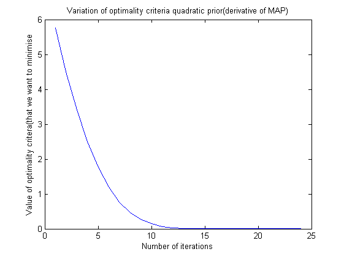
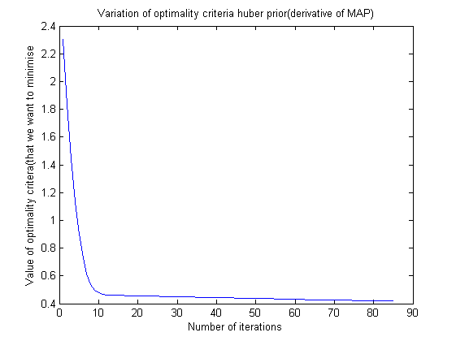
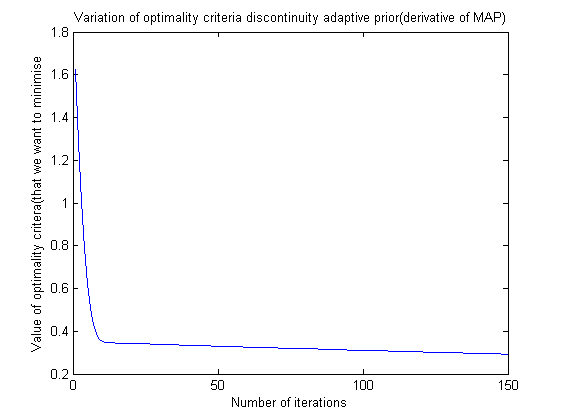
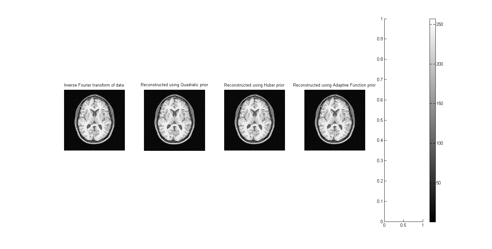

Contents
Reconstructing a Brain Magnetic Resonance Image - Quadratic Prior
We want to reconstruct the image using Bayesian image-denoising algorithm that uses a noise model coupled with a MRF prior that uses a 4-neighbor neighborhood system
clear all load('assignmentImageReconstructionBrain.mat'); optim_fn_iteration_variation = [inf, inf]; for alpha = 0.001 tow = 0.1; x_old = ifft2(imageKspaceData); iteration_count = 1; while(tow>0.01 && iteration_count <= 150) g_x_old = gradient_quadfunction(x_old, imageKspaceData, alpha, imageKspaceMask); x = x_old - tow*g_x_old; g_x_new = gradient_quadfunction(x, imageKspaceData, alpha, imageKspaceMask); if(sum(sum((abs(g_x_old)>abs(g_x_new)))) > sum(sum((abs(g_x_old)<abs(g_x_new))))) tow = 1.1*tow; x_old = x; else tow = 0.5*tow; x = x_old; end optim_fn_iteration_variation = [optim_fn_iteration_variation; [iteration_count, sum(sum(abs(g_x_new)))]]; iteration_count = iteration_count + 1; end imwrite(abs(x), strcat('../Images/quad-prior-', num2str(alpha), '.png'), 'png'); % fprintf('Number of iterations the gradient descent ran was %f \n', iteration_count); end quad_reconstructed = x;
We can verify from visual inspection that the optimal value of alpha is 0.001
h=figure(); plot(optim_fn_iteration_variation(2:end,1), optim_fn_iteration_variation(2:end,2)); title('Variation of optimality criteria quadratic prior(derivative of MAP)') xlabel('Number of iterations') ylabel('Value of optimality critera(that we want to minimise') saveas(h,'../Images/quad-prior-plot','png');
Reconstructing a Brain Magnetic Resonance Image - Huber Prior
We want to reconstruct the image using Bayesian image-denoising algorithm that uses a noise model coupled with a MRF prior that uses a 4-neighbor neighborhood system clear all
load('assignmentImageReconstructionBrain.mat'); optim_fn_iteration_variation = [inf, inf]; for alpha = 0.001 for gamma = 0.1 tow = 0.1; x_old = ifft2(imageKspaceData); iteration_count = 1; while(tow>0.01 && iteration_count <= 150) g_x_old = gradient_adaptive_huber(x_old, imageKspaceData, alpha, gamma, imageKspaceMask); x = x_old - tow*g_x_old; g_x_new = gradient_adaptive_huber(x, imageKspaceData, alpha, gamma, imageKspaceMask); if(sum(sum(abs(g_x_old))) > (sum(sum(abs(g_x_new))))) tow = 1.1*tow; x_old = x; else tow = 0.5*tow; x = x_old; end optim_fn_iteration_variation = [optim_fn_iteration_variation; [iteration_count, sum(sum(abs(g_x_new)))]]; iteration_count = iteration_count + 1; end imwrite(abs(x), strcat('../Images/huber-prior-', num2str(gamma), num2str(alpha), '.png'), 'png'); fprintf('Number of iterations the gradient descent ran was %f \n', iteration_count); end end huber_reconstructed = x;
Number of iterations the gradient descent ran was 86.000000
We can verify from visual inspection that the optimal value of alpha is 0.001 and for gammma it is 0.1. Actually, the precise value of gamma does not seem to have any perceptible effect on the quality of the image. The major contribution comes from the alpha parameter.
h=figure(); plot(optim_fn_iteration_variation(2:end,1), optim_fn_iteration_variation(2:end,2)); title('Variation of optimality criteria huber prior(derivative of MAP)') xlabel('Number of iterations') ylabel('Value of optimality critera(that we want to minimise') saveas(h,'../Images/huber-prior-plot','png');
Reconstructing a Brain Magnetic Resonance Image - Discontinuity Adaptive Prior
We want to reconstruct the image using Bayesian image-denoising algorithm that uses a noise model coupled with a MRF prior that uses a 4-neighbor neighborhood system clear all
load('assignmentImageReconstructionBrain.mat'); optim_fn_iteration_variation = [inf, inf]; for alpha = 0.001 for gamma = 0.1 tow = 0.1; x_old = ifft2(imageKspaceData); iteration_count = 1; while(tow>0.01 && iteration_count <= 150) g_x_old = gradient_adaptive_disc_adaptive_function(x_old, imageKspaceData, alpha, gamma, imageKspaceMask); x = x_old - tow*g_x_old; g_x_new = gradient_adaptive_disc_adaptive_function(x, imageKspaceData, alpha, gamma, imageKspaceMask); if(sum(sum(abs(g_x_old))) > (sum(sum(abs(g_x_new))))) tow = 1.1*tow; x_old = x; else tow = 0.5*tow; x = x_old; end optim_fn_iteration_variation = [optim_fn_iteration_variation; [iteration_count, sum(sum(abs(g_x_new)))]]; iteration_count = iteration_count + 1; end imwrite(abs(x), strcat('../Images/adap-prior-', num2str(gamma), num2str(alpha), '.png'), 'png'); fprintf('Number of iterations the gradient descent ran was %f \n', iteration_count); end end adap_reconstructed = x;
Number of iterations the gradient descent ran was 151.000000
We can verify from visual inspection that the optimal value of alpha is 0.001 and for gammma it is 0.1. As above, gamma does not really affect the quality of the reconstructed image, and the major contributor is the alpha parameter.
h=figure(); plot(optim_fn_iteration_variation(2:end,1), optim_fn_iteration_variation(2:end,2)); title('Variation of optimality criteria discontinuity adaptive prior(derivative of MAP)') xlabel('Number of iterations') ylabel('Value of optimality critera(that we want to minimise') saveas(h,'../Images/adap-prior-plot','png');
h=figure('units','normalized','outerposition',[0 0 1 1]); title('All images compared') subplot(1,5,1), imshow(ifft2(imageKspaceData)), title('Inverse Fourier transform of data') subplot(1,5,2), imshow(abs(quad_reconstructed)), title('Reconstructed using Quadratic prior') subplot(1,5,3), imshow(abs(huber_reconstructed)), title('Reconstructed using Huber prior') subplot(1,5,4), imshow(abs(adap_reconstructed)), title('Reconstructed using Adaptive Function prior') subplot(1,5,5), colorbar saveas(h,'../Images/combined','png');
Warning: Displaying real part of complex input.